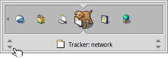

Italiano
Italiano Català
Català Deutsch
Deutsch English
English Español
Español Français
Français Magyar
Magyar Polski
Polski Português
Português Português (Brazil)
Português (Brazil) Română
Română Slovenčina
Slovenčina Suomi
Suomi Svenska
Svenska 中文 ［中文］
中文 ［中文］ Русский
Русский Українська
Українська 日本語
日本語Il Twitcher
Il Twitcher è un selettore di attività che permette saltare tra le applicazioni in esecuzione e tra le loro finestre.
Just tap CTRL TAB to switch between the current and the last application/window. Tapping CTRL TAB very quickly will switch between all applications. Or press and hold CTRL TAB to go through all running applications by repeatedly hitting TAB or ←/→. If you need to get to a specific window of a program, move to its icon as described and then go through its open windows with the ↑/↓ keys.
Puoi passare tra tutte le finestre delle applicazioni visibili sullo spazio di lavoro con CTRL ~ (che, dipendentemente dalla keymap che stai usando, è il tasto sotto ESC).
E' anche possibile invocare il Twitcher con CTRL TAB e quindi usare il mouse per scegliere l'applicazione o la finestra che salterai quando verra rilasciato il tasto CTRL.
Il Twitcher offre anche alcune scorciatoie da tastiera più avanzate:
| ESC | Interrompe il twitching e ritorna alla finestra precedentemente attiva. | |
| Q | Esce dall'applicazione corrente. | |
| H | Nasconde tutte le finestre dell'applicazione scelta. |